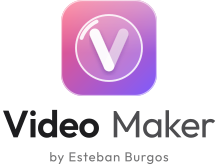
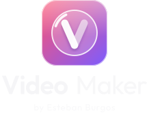

Video Maker · logo final (archivos generados)
Ícono de la app · 1024 → 128 → 64
Dock de macOS (simulado)
Lockup horizontal · claro
Vertical · claro

Sidebar (28 px de marca)
Lockup horizontal · oscuro
Vertical · oscuro

Favicon 16 / 32 / 64
Pestaña del navegador
Video Maker Studio
Glifo monocromo (menú, bandeja)